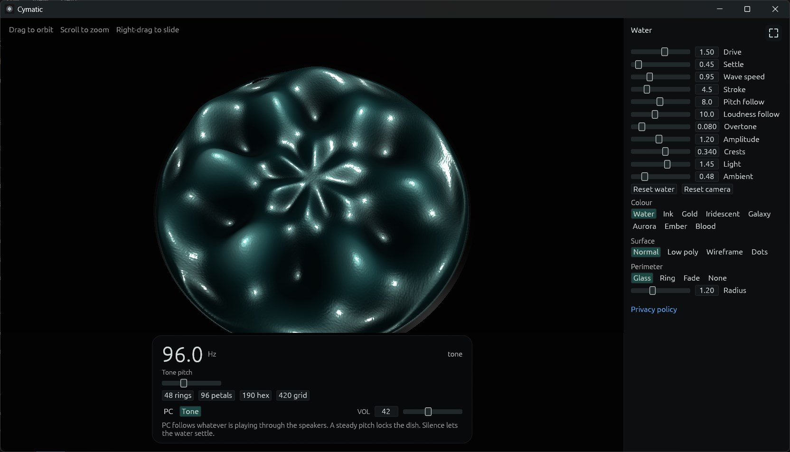
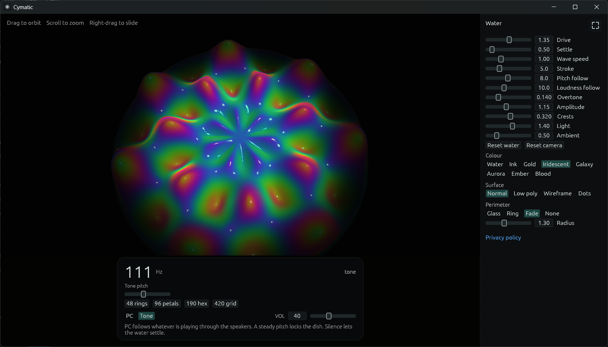
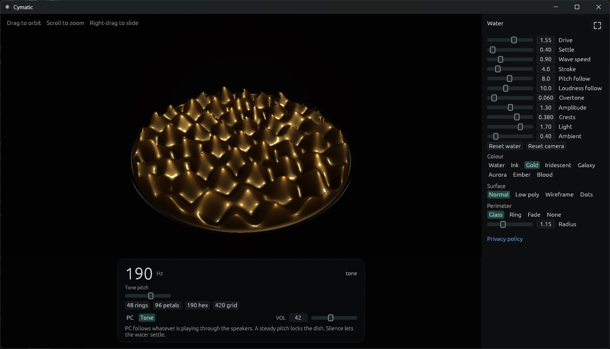
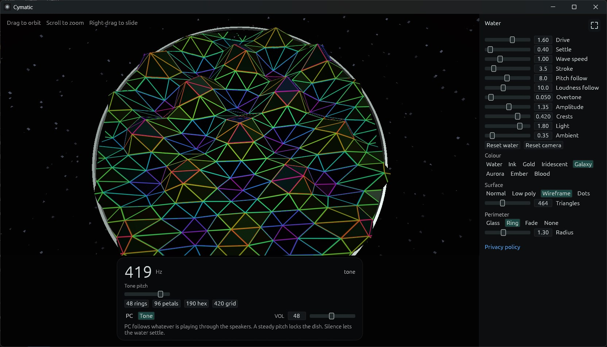
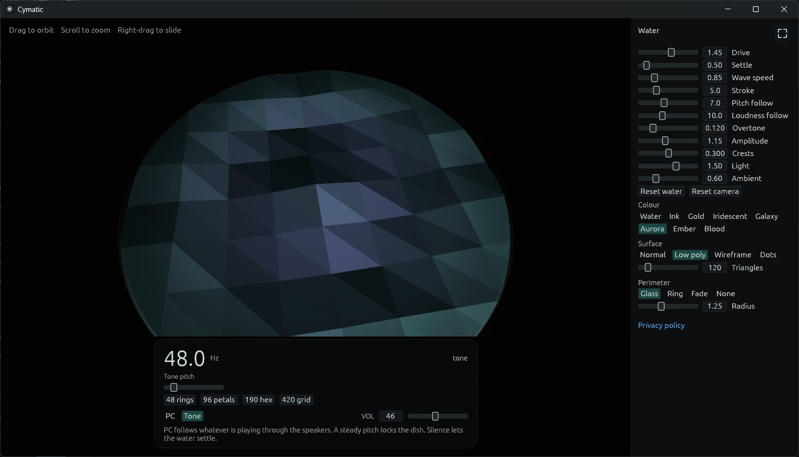

Cymatic
Cymatic is a Windows app published by CymaWare (Cameron S Humphries). It shows a dish of water that locks into cymatic patterns from the sound already playing on the PC, or from a tone generated on the computer. A steady pitch locks the dish. Silence lets the water settle.


Iridescent.

Gold.

Galaxy, wireframe.

Aurora, low poly.
PC sound
If you choose PC sound, the app reads the audio already playing through your speakers so the dish can follow the pitch and loudness. That audio is used on this computer while the window is open. It is not recorded, not saved, and not transmitted.
Tone
The built-in tone is generated on this computer. You set the pitch and the volume.
The dish
You can set drive, settle, wave speed, stroke, how closely pitch and loudness are followed, overtone, amplitude, crests, light, and ambient. Colours are Water, Ink, Gold, Iridescent, Galaxy, Aurora, Ember, and Blood. The surface can be normal, low poly, wireframe, or dots. The perimeter can be glass, a ring, a fade, or none. Full screen is available.
On your PC
Cymatic runs on 64-bit Windows 10 version 2004 (build 19041) or later, including Windows 11. Sliders, colours, and the other controls are saved on this PC so they are still there the next time you open the app. They stay on this PC. There is no account and no sign-in.
Microsoft Store
Cymatic is sold on the Microsoft Store. Microsoft processes the payment. Cameron S Humphries does not receive your card number or other payment details.

What this app does not do
It does not show ads, it does not include analytics, and it does not sell or share personal information. It does not send what you do to Cameron S Humphries or to anyone else.
Privacy policy
The Cymatic privacy policy is the policy for this app.
Questions
What is Cymatic?
Cymatic is a Windows app published by CymaWare (Cameron S Humphries). It shows a dish of water that locks into cymatic patterns from the sound already playing on the PC, or from a tone generated on the computer.
Does Cymatic record audio from my PC?
No. If you choose PC sound, Cymatic reads the audio already playing through the speakers while the window is open, so the dish can follow pitch and loudness. That audio is not recorded, not saved, and not transmitted.
Does Cymatic need an account?
No. Cymatic has no account and no sign-in. It does not send what you do to Cameron S Humphries or to anyone else.
Which versions of Windows run Cymatic?
Cymatic runs on 64-bit Windows 10 version 2004 (build 19041) or later, including Windows 11.
Where is Cymatic sold?
Cymatic is sold on the Microsoft Store. Microsoft processes the payment. Cameron S Humphries does not receive your card number or other payment details.